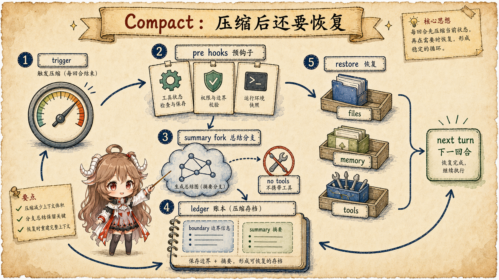
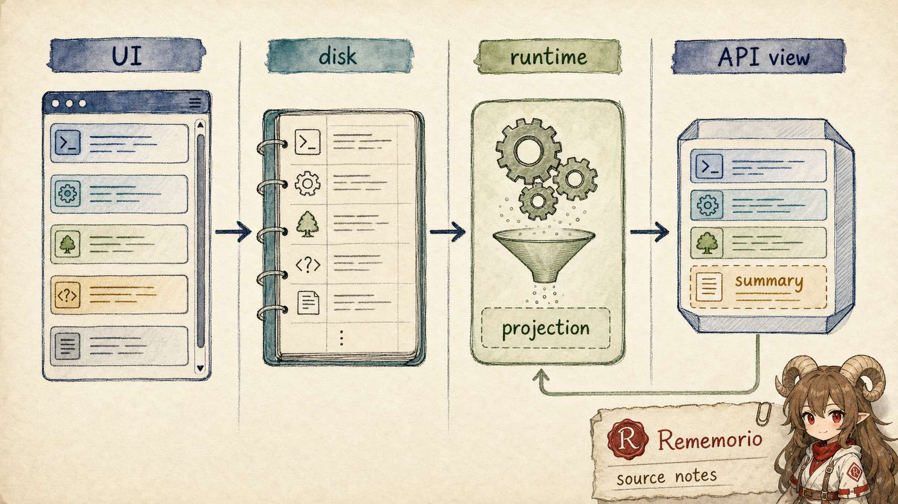
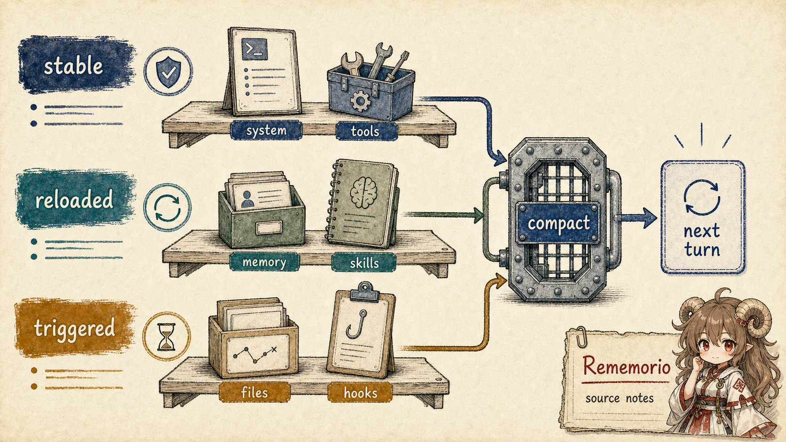

上一篇讲 resume 时，我们一直在区分 UI、transcript、 runtime view 和 API view。到了 prompt cache，这个区分更重要。缓存命中的对象不是“聊天窗口”， 也不是“磁盘里的 transcript”，而是 provider 看到的一段请求前缀。 只要这段前缀的字节形状、工具 schema、系统块、cache marker、beta headers 或模型参数变了， 客户端本地再怎么觉得“还是同一段会话”，服务端也可能没法复用上一轮的处理结果。
这篇的结论先说清：Claude Code 的性能设计，是一套请求形状纪律。
cache_control 只是 marker；真正让 marker 有用的，是把动态内容挪到尾部，
把会话级开关 latch 住，把 fork 子任务做成共享前缀加短尾巴，把 compact 和工具结果替换做成不会让旧前缀漂移的投影。
阅读契约：本篇只追客户端源码可见的 cache discipline：
getCacheControl() 怎样生成 marker，addCacheBreakpoints()
怎样放置请求级 cache marker，动态工具和 beta header 怎样避免打穿前缀，
fork path 怎样复用父级 cache-safe params，cached microcompact 和 content replacement
怎样缩短上下文但保持旧前缀稳定，最后再看 cache break detection 用响应计数验证是否真的断了。
证据边界同前几篇一样：产品和 API 契约参考 Anthropic prompt caching 文档 与 Claude Code 官方概览； 源码层来自 Rememorio/claude-code 公开镜像。 本文只讲客户端源码能观察到的请求形状、缓存标记、计数和恢复边界，不推断 provider 内部如何实现 KV 或缓存替换。
一、先把 prompt cache 看成“前缀契约”
如果把 prompt cache 想成一个布尔开关，很快会误读源码。Claude Code 的 API 请求不是一段单纯的 text prompt； 它至少由 system blocks、message list、tool schemas、model、thinking、extra body、beta headers 和 cache marker 共同构成。缓存复用依赖的是这些东西在可缓存前缀内足够稳定，而不是某个配置值孤立地为真。
源码里最直接的 marker 生成在
getCacheControl()。
它返回 { type: "ephemeral" }，并在符合条件时加上 ttl: "1h"，
在全局缓存策略允许时加上 scope: "global"。这说明 marker 本身并不神秘：
它只是告诉 API 哪个断点值得缓存。真正难的是：下次请求来到同一个断点时，前面的结构还像不像上次。
1.1 TTL 也会影响请求形状
一个容易忽略的细节是 TTL。should1hCacheTTL()
不只是查一次 feature flag。源码注释明确说，用户资格和 allowlist 会被 latch 到 bootstrap state，
目的是避免会话中途 GrowthBook 缓存或 overage 状态变化，导致 cache_control
从 5 分钟形状变成 1 小时形状，或者反过来。对 provider 来说，这不是“同一段文本只是缓存时长不同”，
而是请求里的 cache marker 变了。

1.2 system 和 message 各有自己的 marker 位置
system prompt 的 marker 在
buildSystemPromptBlocks()
里加。源码还留下一个很硬的提醒：不要再为了缓存多加 block，否则可能被 API 拒绝。
message 侧则由
addCacheBreakpoints()
控制。它每个请求只放一个 message-level cache_control marker；
普通请求放在最后一条 message，skipCacheWrite 场景则把 marker 放到倒数第二条，
让共享前缀可以被读到，但 fork-only 尾巴不留下新的缓存尾部。
shape-level example
main turn:
S = system + tools + stable history
U = current user turn
cache marker sits after S + U
fire-and-forget fork:
S = shared parent prefix
F = fork-only task suffix
cache marker sits after S, not after S + FskipCacheWrite
会改变 marker index，让短生命周期 fork 读共享前缀而不写入自己的尾巴。
二、动态内容必须躲开稳定前缀
一个 coding agent 的请求很容易变：工具池会变，MCP server 会重连，Chrome 工具可能晚到， slash command 和 skill 会让可用能力变化，advisor 可能临时打开。简单做法是每次把这些动态材料都塞进系统提示词前面。 但这样每多一个工具、少一个工具，稳定前缀就被改写了。
Claude Code 的源码里有很多“为了不动前缀”的小设计。
在 API 请求装配中，deferred tools
原本会被 prepend 成一段 meta user message；注释说如果启用 delta attachment，就改走持久化的
deferred_tools_delta，因为每次工具池变化都 prepend 会 bust cache。
Chrome tool-search instructions
也是同样逻辑：Chrome 晚连接时，如果把说明 append 到 system prompt，会打穿 prompt cache，
所以启用 delta 后挪到 mcp_instructions_delta。
MCP 和 global cache 的关系也在请求装配处显式处理。 源码判断 全局缓存可用时，如果将要渲染的是用户级、动态的 MCP tool，就不把 marker 放在 system prompt 的全局缓存路径上。 这不是性能保守，而是边界正确：一个用户的动态工具段不应该被当成全局稳定材料。
| 动态来源 | 源码处理 | 保护的东西 |
|---|---|---|
| deferred tools | 优先走 delta attachment，避免每次 prepend 新 meta message。 | messages 前缀不因工具池发现顺序改变。 |
| Chrome tool instructions | 连接晚到时移出 system prompt append 路径。 | system prompt 不被临时说明打穿。 |
| MCP tools | 动态 MCP tool 会改变 global cache strategy。 | 全局缓存只覆盖真正稳定的 system prompt。 |
| advisor tool | 追加在已有 tool schemas 后面。 | 开关 advisor 只扰动尾部，而不是整段工具前缀。 |
| beta headers | 会话级 sticky-on latch。 | 中途开关不改变 server-side cache key。 |
2.1 headers 也要稳定
很多 cache miss 不来自正文，而来自请求配置。Claude Code 在 API 装配中 latch 动态 beta headers： AFK、fast mode、cache editing、thinking clear 都有各自的 sticky 逻辑。 注释写得很清楚：一旦某个 header 首次发送，就尽量在本会话余下请求中继续发送， 以免中途 toggle 改变 server-side cache key。
这里的微妙之处是“header 稳定”和“行为仍可动态”并不冲突。
fast mode
的 header 会 latch，speed="fast" 仍然会按 cooldown 动态决定；
cache editing
的 beta header 会 latch，但是否真的发送 cache_edits 仍由当前 feature 和 provider 条件决定。
也就是说，源码把“会影响 cache key 的外形”和“本轮实际行为”拆开了。
三、Fork path：为了 cache，故意不像普通 subagent
第六篇讲 subagent 时，我们已经看过普通子代理会有自己的 system prompt、工具上下文、权限模式和消息链。 但 fork path 不是普通子代理。它的目标不是“换一个人格去做任务”，而是从父会话分出一条短尾巴， 让子任务尽量复用父查询已经写好的缓存前缀。
这个设计在
AgentTool.tsx
里写得很直白：fork child 继承父级 system prompt，而不是使用 FORK_AGENT 自己的 system prompt；
buildForkedMessages() 会复制父 assistant message 和占位 tool results，再追加每个 child 自己的 directive。
到
组装 runAgent 参数
时，fork path 还会传父级工具数组、父级消息和 useExactTools: true。
runAgent()
继续沿着这个选择走：useExactTools 的 fork child 继承父级
isNonInteractiveSession 和 thinkingConfig。普通 subagent 则会关闭 thinking 来控输出成本。
如果把 fork child 当普通 subagent 处理，system、tools、thinking config 任意一个不一致，缓存前缀都可能从第一次不同处断掉。

四、Compact：缩短上下文时，也不能随手改旧前缀
上下文压缩看起来和 prompt cache 天然冲突：既然 compact 会改 messages，它不是必然让缓存失效吗？ Claude Code 的答案分两层。第一层是 full compact：它把旧会话总结成新的 compact boundary， 之后的请求自然进入一条新前缀。第二层是 microcompact / content replacement： 它们想缩短模型可见的工具结果，但尽量不让已经缓存过的旧前缀字节突然漂移。
full compact 也有 cache sharing。compact 主流程
读取 tengu_compact_cache_prefix，默认让 compact summary 的 fork 路径复用主会话 prompt cache。
这和前面的 fork path 是同一套思想：summary request 是短生命周期 side path，
它应该读取主会话稳定前缀，而不是把自己当成完全陌生的请求从头开始。
cached microcompact 更直接。microcompactMessages()
先处理时间触发：如果离上一条 assistant message 太久，源码认为服务端缓存可能已经过期，
这时直接走 content-clear 老工具结果，因为完整前缀反正要重写。只有在 main thread、feature 打开、模型支持、
缓存仍有意义时，才进入 cached microcompact。
cached path 的关键注释在
cachedMicrocompactPath()：
它不修改本地 message content；cache_reference 和 cache_edits
在 API 层添加；它追踪工具结果并排队 cache edits。
真正有删除发生时，
源码会 queue cache_edits，
通知 cache break detection 这是预期下降，然后返回未改动的 messages。

4.1 cache_edits 不是“本地删消息”
addCacheBreakpoints() 里可以看到 cache editing 的真正入口。
它先把正常 message 转成 API param，再在启用 cached microcompact 时
去重并插入 cache_edits block。
后面还会给处于缓存前缀内的 tool_result 加 cache_reference。
所以它保护的是 provider-side cached prefix 的可编辑路径，而不是把本地 transcript 改得更短。
这也是为什么它要把 pending edits 在
定义 paramsFromContext 之前消费一次。
paramsFromContext 可能被 logging、retry、fallback 多次调用；
如果每次调用都重新消费 pending edits，同一轮重试里的请求形状就会自己不一致。
五、Tool result replacement：变小，也要字节一致
工具输出太大时，Claude Code 会把大结果持久化到本地，只把 preview 放进模型视野。 但这里也不能“看心情替换”。一个旧 tool_result 第一轮没被替换，第二轮突然替换； 或者第一轮替换成某段 preview，第三轮重新从磁盘读出一段略有差异的 preview， 都会改变已经缓存过的前缀。
所以 toolResultStorage.ts
明确维护 ContentReplacementState。seenIds 记录哪些 tool result 已经过预算判断；
replacements 记录已经持久化并替换的 preview 字符串。
注释强调：被替换过的结果以后通过 Map lookup 重新应用，不做文件 I/O，保证 byte-identical。
fork 这类共享缓存前缀的路径还会 clone replacement state，让子任务和父任务做出同样选择。
预算执行时，候选结果先按历史决策分区：
以前替换过的必须复用同一段 preview；以前见过但没替换的冻结，不允许后面再替换；
只有从未见过的 fresh 结果才参与新一轮预算选择。
enforceToolResultBudget()
的注释把这个约束说得更直接：以前处理过的消息每轮只重新应用缓存 replacement，
新消息才做预算判断。

5.1 resume 和 fork 都要带上替换历史
这和上一篇 resume 连在一起。替换历史如果恢复错了，旧 transcript 能读回来，
但下一轮 API view 会变成另一条前缀。源码在 ContentReplacementState
的生命周期注释里把 main thread、subagent、resumeAgentBackground 和 cache-sharing fork 都列出来；
目的不是为了本地文件管理好看，而是让“哪些 tool result 应该还是 preview”这件事跨 turn、resume、fork 都稳定。
还有一个更小的并发边界：
源码在 await 前后维护 seenIds 和 replacements 的原子性。
如果并发读者看到某个 id 已经 seen，但 replacement 还没写入，它可能把这个结果误判成 frozen，
发送完整内容；而主线程发送的是 preview。两条路径对同一个历史前缀给出不同 wire content，结果就是 cache miss。
六、Cache break detection：别靠感觉判断命中
前面讲的都是“怎样避免 break”。但真正上线后，客户端还要回答另一个问题： 如果 cache read tokens 突然掉了，到底是 system prompt 改了、tools 变了、TTL 到了、headers 变了， 还是 provider 侧路由或 eviction？Claude Code 为此有一套 cache break detection。
PreviousState
里保存 system hash、tools hash、cache_control hash、tool names、model、fast mode、global cache strategy、
beta headers、overage、cached microcompact、effort、extra body、上一轮 cache read tokens 和 pending changes。
getTrackingKey()
又把 main thread、SDK、tracked agents 和 compact 分开；compact 会共享 repl_main_thread
的 tracking key，因为它共享同一套 cache-safe params。
API 请求前，query 装配调用 recordPromptState()。
注意它传的是已经 latch 后的 header 状态，并且排除了 defer_loading tools，
因为这些工具不会进入实际 prompt。也就是说 detection 不是拿“用户开了什么开关”做猜测，
而是记录“本次真的会影响 server-side cache key 的客户端可见形状”。
API 响应后，源码用 response usage 调 checkResponseForCacheBreak()。
这个函数先比较上一轮和本轮的 cache_read_input_tokens，
如果下降不明显就直接清空 pending changes；如果 cached microcompact 刚做过 cache deletion，
它把下降视为预期现象。
真正疑似 break 时，才把 model、system、tools、cache_control、betas、effort、extra body
等变化整理成原因。

七、把九篇串起来：最后看的是同一条 runtime 账本
到这里，Claude Code 系列的第一轮路线就闭合了。第一篇建立运行主线； 第二篇讲上下文怎样进入 model-visible view；第三、四篇讲工具和权限怎样把副作用收口； 第五篇讲命令、skills、MCP 怎样把能力引入本轮；第六篇讲 subagent 和 fork； 第七篇讲 hooks 的生命周期插槽；第八篇讲 transcript 和 resume；第九篇把这些都收回到性能层。
| 机制 | 如果只看功能 | 从 prompt cache 看 |
|---|---|---|
| context management | 把长会话变短。 | 决定哪些内容留在稳定前缀，哪些变成尾部或摘要。 |
| tools / MCP | 给模型更多能力。 | 工具 schema 和动态说明会改变 cache key，必须控制注入位置。 |
| permissions / hooks | 拦截副作用。 | hooks 结果和运行时状态不能无意污染缓存前缀。 |
| subagent / fork | 把任务分出去。 | 普通 subagent 隔离上下文；fork child 共享父级稳定前缀。 |
| resume / replacement | 继续旧会话。 | 恢复的不只是 messages，还要恢复会影响 wire prefix 的替换决策。 |
| compact / microcompact | 压缩上下文。 | full compact 建新前缀；cached microcompact 尽量编辑旧缓存而不改本地历史。 |
所以，Claude Code 的 prompt cache 不是最后加上的性能小技巧，而是倒逼很多 runtime 设计变得精细的约束。 请求形状越稳定，长会话、fork、compact、resume 和工具输出替换才越像一套系统； 请求形状一漂，前面再多工程都可能在下一次 API 调用时重新付账。
参考源码与文档
- Rememorio/claude-code 公开镜像
- Anthropic prompt caching
- Claude Code overview
- claude.ts：getCacheControl
- claude.ts：should1hCacheTTL
- claude.ts：global cache strategy and MCP tools
- claude.ts：deferred tools and Chrome instructions
- claude.ts：latched beta headers
- claude.ts：paramsFromContext and cache edits
- claude.ts：addCacheBreakpoints
- claude.ts：buildSystemPromptBlocks
- AgentTool.tsx：fork path cache-identical prefix
- runAgent.ts：useExactTools options
- compact.ts：promptCacheSharingEnabled
- microCompact.ts：cached microcompact path
- toolResultStorage.ts：ContentReplacementState
- toolResultStorage.ts：replacement partition and budget
- promptCacheBreakDetection.ts：tracking state and keys
- promptCacheBreakDetection.ts：recordPromptState
- promptCacheBreakDetection.ts：checkResponseForCacheBreak